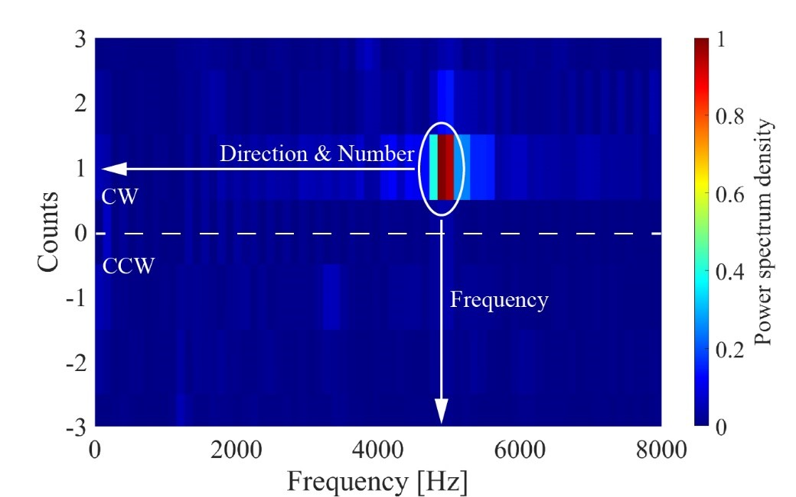

Home
Home
Combustion is performed in two different modes: deflagration and detonation. Aerospace propulsion
systems, such as rockets, ramjets, and scramjets, commonly use the deflagration mode of combustion
for the heat addition process. Deflagration is considered as approximately isobaric combustion, in
which the combustion waves propagate at subsonic speed. After a period of continuous development,
it has become more difficult to achieve further improvements in the high efficiency of such engines
based on deflagration. Detonation is similar to isochoric combustion, in which the combustion wave
coupling with the shock wave propagates at supersonic speeds. Compared with deflagration, detonation
has faster heat release, lower entropy, and higher thermal efficiency. Consequently, The detonation
engine greatly improves the theoretical upper limit of propulsion system performance and has broad
development prospects.
Currently, the main types of detonation engines used around the world are pulse detonation engines
(PDEs), rotating detonation engines (RDEs), and oblique detonation engines (ODEs). The PDEs are
mainly trapped by their intermittent nature of operation and low average thrust. The application of
ODEs is limited due to the strict requirements of the inlet flow conditions and the difficulty of
controlling the shock wave. RDEs operate in a circumferential combustion mode (perpendicular to
the incoming flow direction), which is different from the axial operation mode (parallel to the incoming
flow direction) of the above-mentioned detonation engine and conventional isobaric combustion engine.
Under certain flow channel configurations and inflow conditions, the detonation wave achieves continuous,
self-sustaining propagation. The advantages of RDEs include:
• High propagation frequency and stable thrust.
• One-time initiation and wide working range.
• Simple structure and high cycle efficiency.
• Large effective thrust at a low-pressure ratio.
The air-breathing RDE mode is the focus of our research. The high enthalpy incoming flow enters the
combustor at Mach 2.0 with a total temperature between 1100K and 1900K. At present, the stable
operation of the air-breathing RDE with hydrogen as the fuel and as the ethylene fuel has been realized.
Stable operation of the air-breathing RDE
Single wave mode in H2/Air RDE with annular combustor
Single wave mode in H2/Air RDE with annular combustor
Single wave mode in H2/Air RDE with annular combustor
Single wave mode in C2H4/Air RDE with hollow combustor
Single wave mode in C2H4/Air RDE with hollow combustor
Single wave mode in C2H4/Air RDE with hollow combustor
A variety of high-frequency measurement techniques have been applied to evaluate the performance of RDE. Specifically includes dynamic pressure measurement (PT), flame intensity measurement (PD), ion concentration measurement (IP), sound pressure measurement (MIC), high-speed photography, schlieren, Tunable Diode Laser Absorption Spectroscopy ( TDLAS ), and Planar Laser Induced Fluorescence ( PLIF ).
RDE working frequency obtained by different measurement methods